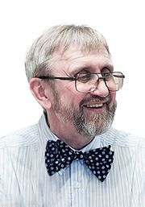

На протяжении веков в Беларуси творили архитекторы, инженеры, художники разных национальностей. Здесь работали итальянцы, фламандцы, французы, немцы, бельгийцы, поляки, литовцы, русские... В свою очередь, выходцы из Беларуси, в том числе строители, мастера прикладного искусства, работая в России и во многих странах Западной Европы, снискали там известность.
До IX в. монументальная архитектура находилась на начальной ступени развития и представлена погребальными курганами и языческими храмами.
IX-XI вв. характеризуется развитием феодальных отношений, введением христианства, расцветом всех областей культуры. Появляются княжеские хоромы, церкви и монастыри.
В XII-XIII вв. на территории современной Беларуси возникает несколько удельных княжеств. Монументальные памятники того времени: в Полоцке ‒ Спасо-Ефросиниевский собор (XII в.), в Витебске ‒ Благовещенская церковь (XII в.), Гродно ‒ Борисоглебская, или Коложская церковь (XII в.), Каменце ‒ Белая вежа (XIII в.).
Частые войны, происходившие на территории Беларуси, оказали значительное влияние на развитие градостроительства и архитектуры. Большое внимание уделялось в то время строительству развитых городских укреплений, крепостей, замков, оборонных храмов. Культовая архитектура оборонного типа наиболее полно представлена храмами в Сынковичах (XV в.) и Мурованке (нач. XVI в.). Для них характерны компактный массивный объем с высокой щипцовой крышей и наличие четырех или двух угловых башен с бойницами.
Замки XIV-XVI вв. имеют черты готической архитектуры: своеобразную кладку, перекрытия в виде стрельчатых крестовых сводов или сводов с нервюрами, высокие окна и двери стрельчатого очертания. Культовая архитектура оборонного типа наиболее полно представлена храмами в Сынковичах (XV в.) и Мурованке (нач. XVI в.). Для них характерны компактный массивный объем с высокой щипцовой крышей и наличие четырех или двух угловых башен с бойницами.
Архитектор дня

Юрий Степанович Ананич
(23 ноября 1955 — 28 февраля 2015)
Белорусский архитектор, внёсший вклад в формирование архитектурного облика современного Минска и других белорусских городов. Член Белорусского союза архитекторов.
В XVI в. из Западной Европы в Беларусь начали проникать идеи реформации и гуманизма, приведшие к утверждению принципов искусства Возрождения. В архитектуру проникают сначала элементы ренессанса (г. Сморгонь), а затем барокко (г. Несвиж).
Основным художественным направлением в архитектуре XVII и первых трех четвертей XVIII в. явилось барокко. Архитектура ранних костелов тесно связана с влиянием итальянской художественной школы, но со второй половины XVII в. появляются памятники с местными чертами.
Со второй половины XVIII в. на смену барокко пришел классицизм, окончательно утвердившийся в конце XVIII в. В постройках отмечается упрощенность линий, объемов, деталей, появляются простые и спокойные формы, не лишенные изысканности, свойственной архитектуре барокко.
Архитектура второй половины XIX ‒ начала XX в. явилась переломным этапом в истории зодчества Беларуси. Она характеризуется принципиальными изменениями в строительной технике, борьбой и сменой ряда художественных стилей.
Современное зодчество Беларуси в значительной степени опирается на архитектурно-художественные разработки прошлых веков, разнообразные стили и направления.